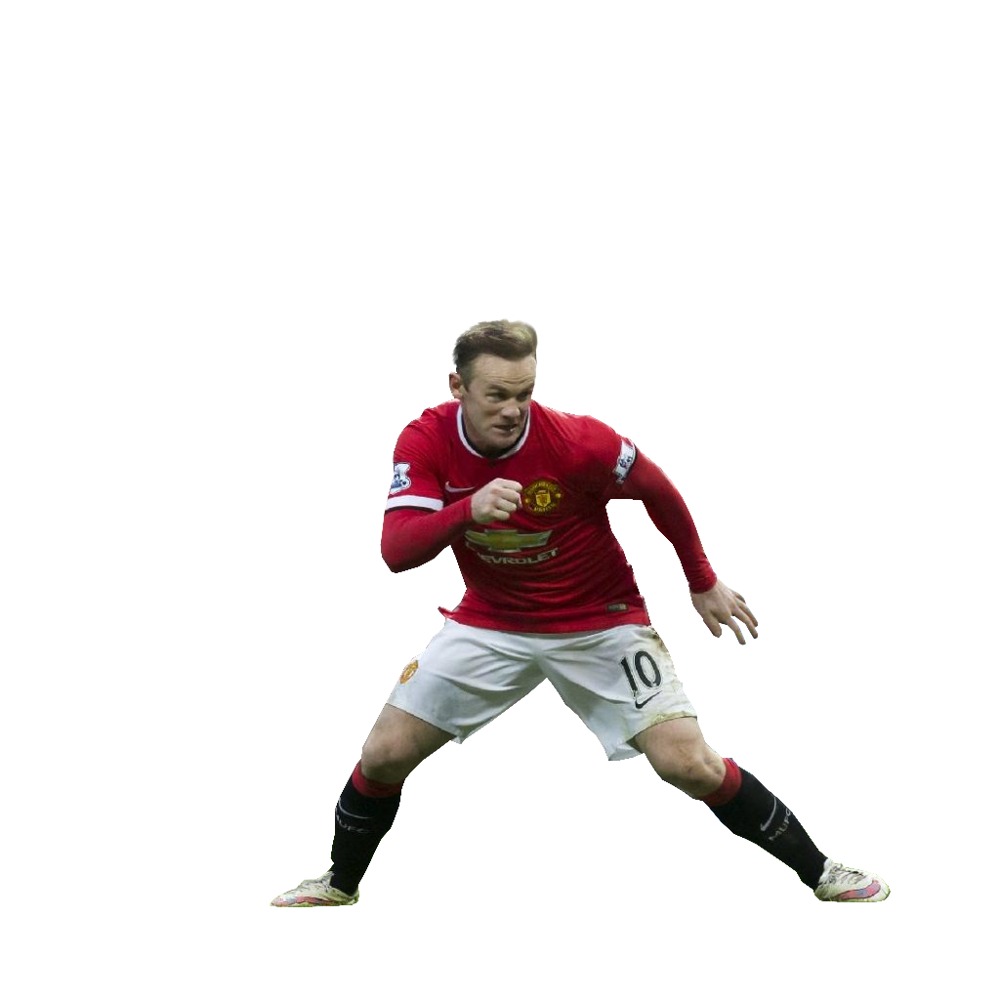
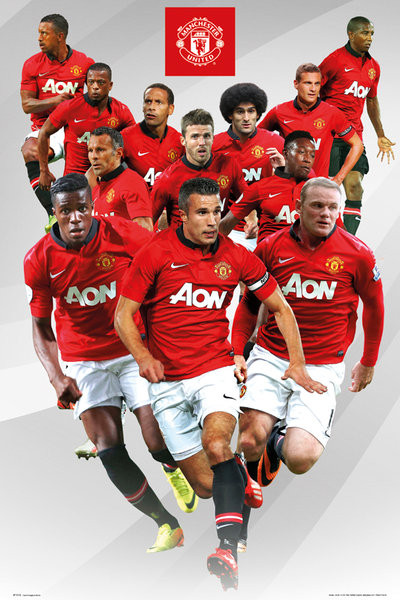
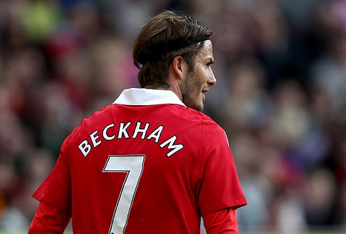
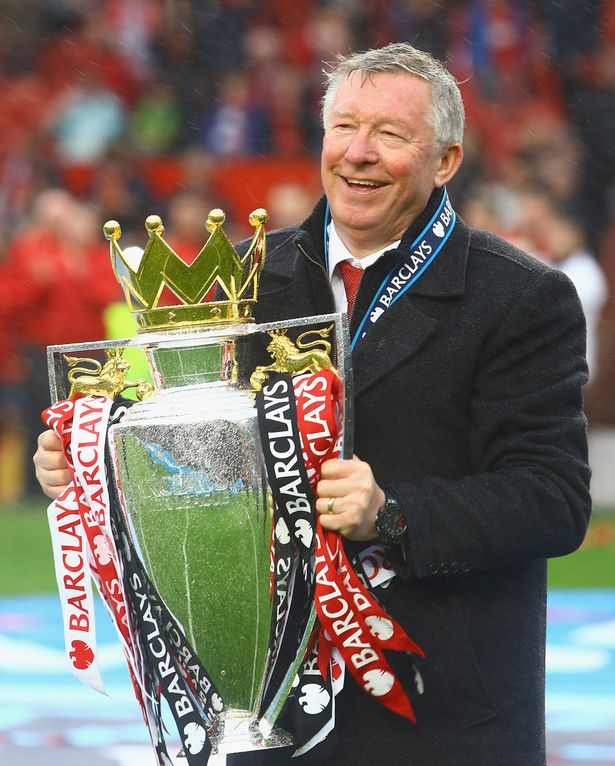

Manchester United is one of the most prestigious, respected and feared teams in the English league and the world of football. The club accomplished such awards by their performances on and off the football field. Manchester United has been enhanced by so called legends like: Paul Scholes and David Beckham, to the new generation of players headed by Cristiano Ronaldo, Nemanja Vidic and best actual player Wayne Rooney. British football has always been the main and most popular sport throughout history. British football has always had outstanding teams and great squads, but which one is the best? 
One of the main reasons Manchester United has had so much success throughout the years is because of their coach, Sir Alex Ferguson. Ferguson has the record for the longest time on the soccer field, 25 years.  The legendary Sir Alex Ferguson has accomplished what other soccer coaches dream to live on doing. Coaches admire him, coaches envy him. He is what every coach dreams on being. Ferguson has made Manchester United succeed throughout the years like no other team has.
Manchester United knows that experience is a key factor in world football and no other team values that like Manchester United. Manchester United believe in developing very good talented young players for the team's future.  Coach Ferguson has inserted youth in Manchester United, while hanging onto the old experienced players to pass on their influence on the younger ones. This helps the young players develop a good connection between talented young players and the old experienced players for the future of the club.  Ferguson insisted that without youth the club will not have success.
One of the main reasons Manchester United has had so much success is because of their manager, owner and most importantly, money. Manchester United have become the first sports team in the world to be valued at more than 3billion US dollars. Manchester United's owner, Malcom Glazer is one of the richest mans in the world. He has a net worth of four hundred and twenty million dollars. Manchester has always been known for having the most expensive, best players in the world. Like: Cristiano Ronaldo, Wayne Rooney, Ferdinand, Vidic, and the most expensive soccer player ever, David Beckham.
Other useful links...


Brescia

Owensboro

Telephone